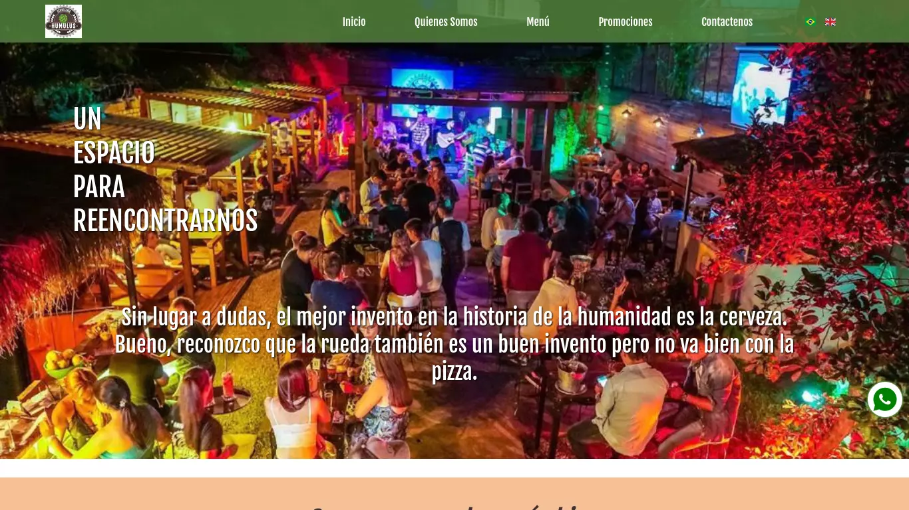

Humulus Cervecería
Humulus, una tienda de cervezas y restaurante, ubicada en la ciudad de Puerto Iguazu, Misiones, Argentina, es un lugar donde queremos hacer que la pases bien. Entre amigos o en familia, poseemos una variedad de bebidas y platos que acompañaran entrañables momentos.
Proyecto realizado en conjunto con Gastón Heiler
Tecnologías
Este proyecto está realizado con las siguientes tecnologías


Contenido
Este proyecto trata de mostrar las caracteristicas del lugar como que servicios puede dar. Tiene secciones de "Quienes Somos", "Menú", "Contactanos" y "Promociones".
Presenta la caracteristica de ser en tres idiomas dado que es necesario por el tipo de público que asiste.
Es responsive design.
Inicio
En esta sección se presentan algunos productos típicos, eventos destacados, ubicación y la posibilidad de un ícono flotante para contactarse por WhatsApp.

Quienes Somos
Se describe las instalaciones del lugar y el fin del mismo.

Menú
Se tiene un menú dividido por secciones. Cada producto tiene un título. Descripcion y precio son opcionales.

Promociones
En esta parte se presentan distintas promociones ofrecidas por el propietario.

Contactanos
En esta sección se muestra la ubicacion en un mapa y da la posibilidad de contactarse por mail enviando pedidos y sugerencias.

Otras caracteristicas del proyecto
Multi lenguaje
Por estar ubicado en una región fronteriza y turística, se vió necesario realizar una página en tres idiomas: Español, Inglés y Portugués. El la barra de navegación se selecciona el idioma según una bandera de referencia.

Configuracion
Presenta un modo de configuracion donde, a partir de un logueo, se accede a la cofiguración del menú (agregar, borrar o modificar un producto), promociones y eventos. Además se pueden cambiar algunos textos de la página.